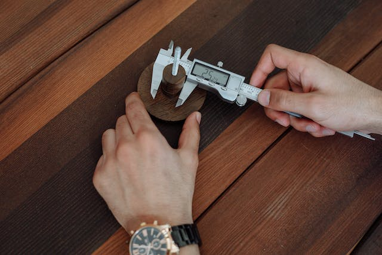
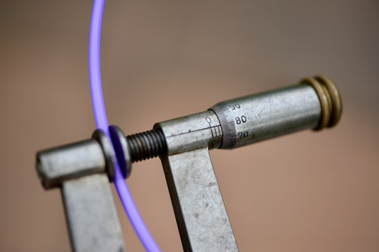
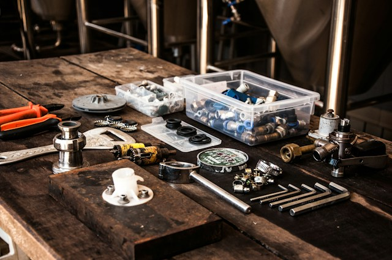

Mecânica de Motos
Para aprender mecânica de motos é preciso ter a ferramenta necessária para começar. Antes de tudo devemos ter um
conhecimento técnico bem estruturado
Depois devemos pensar nas ferramentas que são necessárias para fazer o nosso serviço. Segue o Link da Lista de
Ferramentas Abaixo.
Lista de Ferramentas
Lista de Ferramentas Básicas
- Paquímetro
- Micrômetro
- Calibre de Lâminas
- Torquimetro
- Kit de Ferramentas básicas (Chave de Fendas, Alicates, Chave Catraca, Cabo de Força e Soquetes)
Você precisará
- Conhecimento Técnico
- Vontade de Aprender
Segue fotos de Algumas Ferramentas
Paquímetro

Micrômetro

Kit Ferramentas

Essa é uma tabela de motos que você pode mexer
Tabela de Motos
| Nome da Marca |
Modelo da Moto |
Categoria |
| Harley-Davidson |
Sportster XL 1200 |
Custom |
| Ducati |
Panigalle V4S |
Speed |
| Triumph |
Tiger 800 |
Big Trail |
Links para acessar cada um dos itens separados
Lista de Ferramentas
Tabela das Motos que você poderá Mexer
Inicio da Página
Fotos das Ferramentas